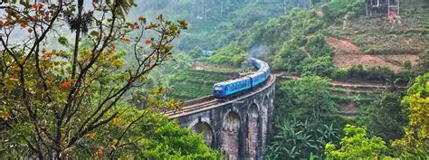
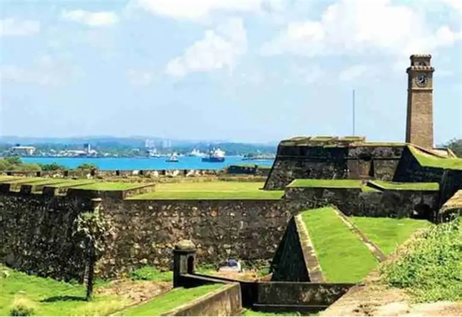

Kandy, known as the cultural capital of Sri Lanka, is a charming city surrounded by lush green hills.
It is home to the sacred Temple of the Tooth Relic and the scenic Kandy Lake.
The city is rich in history, tradition, and spirituality, making it a must-visit destination.
Highlights:
Temple of the Tooth
Kandy Lake walk
Peradeniya Botanical Gardens
Ella, Sri Lanka

Ella is a peaceful hill-country town filled with breathtaking landscapes, waterfalls,
and tea plantations. Famous for its hiking trails like Ella Rock and Little Adam’s Peak,
it offers a perfect escape for nature lovers and adventure seekers.
Highlights:
Ella Rock hike
Nine Arch Bridge
Little Adam’s Peak
Galle, Sri Lanka

Galle is a historic coastal city with a unique blend of culture,
colonial charm, and beautiful beaches. The iconic Dutch Fort, cobblestone streets,
and vibrant seaside atmosphere make it a fascinating place to explore and relax.